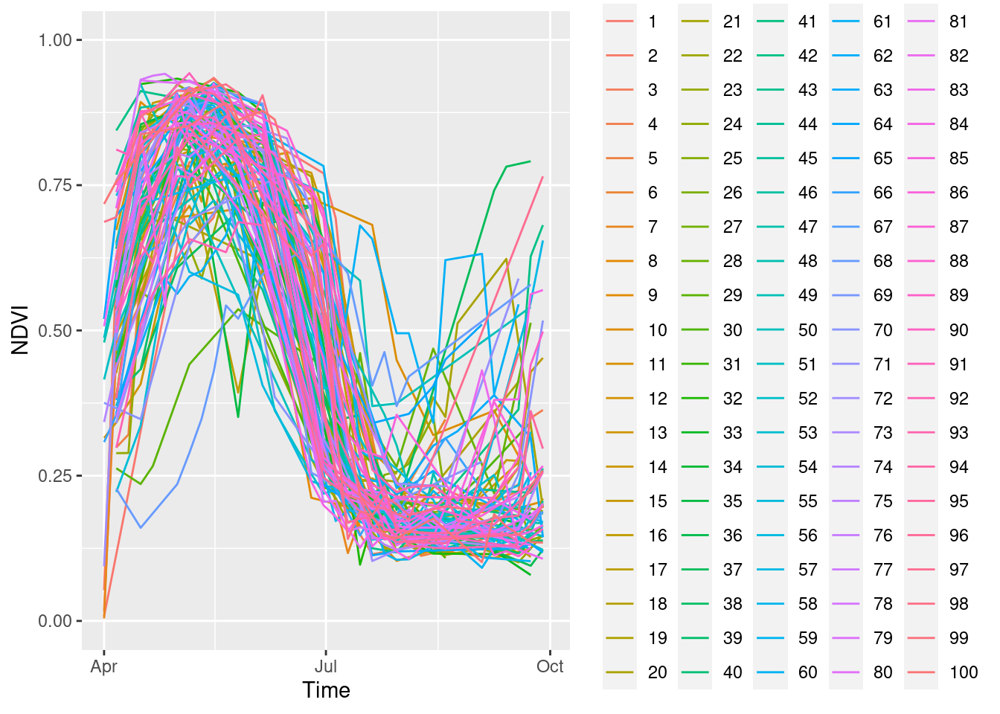

Example 3: Extracting training data for machine-learning applications
Please notice that code chunks in this document are meant to be executed on an Amazon Web Services (AWS) machine in region us-west-2 (Oregon). Examples have been selected to yield computation times acceptable for a live demonstration. Please feel free to apply on larger areas and/or using a higher spatial resolution.
Introduction
Machine learning models for land cover classification, change detection, spatiotemporal prediction, and similar tasks in most cases need a large number of observations for training. In this example, we will extract satellite observations from labeled points. Therefore, we will use primary data from the European Land Use and Coverage Area frame Survey (LUCAS) containing ground-based land cover point samples from 2018. The data can be downloaded as country-wise CSV files (see here). We will use observations over Germany and extract Sentinel-2 NDVI observations of common wheat samples.
1. Load and preprocess samples
First, we need to convert our CSV table into a spatially referenced sf (Pebesma 2018) object. After reading the CSV files, we remove rows without valid coordinates and create an sf object using st_as_sf() by specifying the names of latitude and longitude columns.
library(sf)x =read.csv("data/DE_2018_20200213.CSV") # downloaded from https://ec.europa.eu/eurostat/cache/lucas/DE_2018_20200213.CSVx = x[-which(is.na(x$TH_LAT) |is.na(x$TH_LONG)),]x =st_as_sf(x, coords =c("TH_LONG", "TH_LAT"), crs ="EPSG:4326")x$t =as.Date(x$SURVEY_DATE, format ="%d/%m/%y") head(x[,c("LC1","t")])nrow(x)
## Simple feature collection with 6 features and 2 fields
## Geometry type: POINT
## Dimension: XY
## Bounding box: xmin: 10.25433 ymin: 47.97129 xmax: 10.28515 ymax: 53.32969
## Geodetic CRS: WGS 84
## LC1 t geometry
## 1 B16 2018-06-20 POINT (10.28515 53.32969)
## 2 B16 2018-08-03 POINT (10.25433 47.97129)
## 3 C21 2018-06-26 POINT (10.25469 48.04328)
## 4 B16 2018-07-06 POINT (10.26024 49.12281)
## 5 A22 2018-09-03 POINT (10.2652 50.04006)
## 6 B32 2018-09-02 POINT (10.2659 50.16593)
## [1] 26777
The LC1 column contains codes for primary land cover types of the samples. We are interested in common wheat, which is decoded as B11.
We now use the dplyr package (Wickham et al. 2022) to sample 100 corresponding observations and afterwards plot the result.
As expected from random sampling, points are scattered all over Germany, i.e., we need to load a lot of Sentinel-2 images though only extracting single values.
2. Query related images from STAC
As in the previous examples, we calculate the bounding box, perform a STAC query to find relevant images and afterwards create a gdalcubes image collection object. Since our point samples cover a large area and time range, this may include quite a lot of images and the STAC request might take some time. To avoid repeating these steps. we simply store the resulting image collection as a file and reload it when needed.
Now, we (re)load the image collection, and define a rather large data cube at 10m / five days spatial and temporal resolution respectively. We also calculate the NDVI, which we would like to use as “explanatory” variable.
## A data cube proxy object
##
## Dimensions:
## low high count pixel_size chunk_size
## t 2018-04-01 2018-10-02 37 P5D 1
## y 6055573.54251774 7370993.54251774 131542 10 768
## x 827616.484143196 1686796.4841432 85918 10 768
##
## Bands:
## name offset scale nodata unit
## 1 NDVI 0 1 NaN
5. Extract NDVI values from point samples
Now, we can extract values from the cube using the extract_geom() function. Given a data cube and any simple feature geometries as an sf object, the function can be used as a general method to extract data cube pixel values at irregular locations. extract_geom() returns a data.frame with columns for feature identifiers (FIDs, often row numbers of the sf object), time, and bands / variables of the data cube. Each row represents the data cube values of one pixel relating to the feature given by the FID column. For anything other than simple point geometries (e.g. POLYGON, LINESTRING, MULTIPOINT, and similar), the result may contain multiple rows per feature. In these cases, it is possible to apply an aggregation function to compute mean, median or similar summary statistics over features.
extract_geom() drops any pixels with missing values only. Hence, if a feature is outside the extent of the data cube, or all pixels of a feature are NA due to clouds or unavailability of images, these pixels will not be included in the result. In contrast, if the input features contain overlapping geometries, pixels may be included several times (with different values in the FID column).
6. Combine results with geometries
To combine the extracted data cube values with the original sf object with geometries, the merge() function can be used. merge() performs table join operations on common columns (e.g. IDs). We therefore first need to add an FID column to the features and then join both tables by their FID columns. Notice that by default, this is performing an inner join, i.e. rows with FIDs that only exist in one table will be dropped. Alternatively, we can set all.x=TRUE to make sure that our result contains all features from the original dataset (left outer join).
sf = training_sitessf$FID =rownames(sf)df =merge(sf, ndvi_obs, by ="FID")dfplot(df[,"NDVI"])
## Simple feature collection with 48 features and 5 fields
## Geometry type: POINT
## Dimension: XY
## Bounding box: xmin: 7.911385 ymin: 48.00758 xmax: 14.90914 ymax: 54.5975
## Geodetic CRS: WGS 84
## First 10 features:
## FID LC1 t time NDVI geometry
## 1 1 B11 2018-05-28 2018-05-26 0.8159437 POINT (14.90914 51.17738)
## 2 10 B11 2018-07-04 2018-06-30 0.3199060 POINT (8.423892 52.51083)
## 3 11 B11 2018-05-24 2018-05-21 0.9251531 POINT (10.41534 54.37171)
## 4 12 B11 2018-08-23 2018-08-19 0.1945780 POINT (11.31585 52.67577)
## 5 21 B11 2018-07-04 2018-06-30 0.4771399 POINT (12.65786 54.30789)
## 6 23 B11 2018-08-04 2018-08-04 0.1628106 POINT (8.833251 51.50885)
## 7 24 B11 2018-06-08 2018-06-05 0.7050465 POINT (10.76221 53.1479)
## 8 25 B11 2018-07-02 2018-06-30 0.4945055 POINT (11.37654 53.66373)
## 9 26 B11 2018-07-19 2018-07-15 0.2339880 POINT (10.74198 51.96172)
## 10 28 B11 2018-06-28 2018-06-25 0.6762503 POINT (9.173378 51.81735)
7. Extract complete time series
If we skip the time_column argument in extract_geom(), we can extract complete time series at irregular points. Below, we use the same locations but extract complete time series, which we afterwards plot using the ggplot2 package (Wickham 2016).
wheat_timeseries <-extract_geom(s2_cube, training_sites)nrow(wheat_timeseries)library(ggplot2)wheat_timeseries |>ggplot( aes(x =as.Date(time), y = NDVI, color =factor(FID))) +geom_line(size =0.5) +ylim(c(0,1)) +xlim(c(as.Date("2018-05-01"),as.Date("2018-09-30"))) +xlab("Time") +ylab("NDVI")

## [1] 1425
References
Pebesma, E. (2018), “Simple Features for R: Standardized Support for Spatial Vector Data,”The R Journal, 10, 439–446. https://doi.org/10.32614/RJ-2018-009.
---title: "Example 3: Extracting training data for machine-learning applications"execute: eval: true # local---```{r}#| label: config#| include: false#| eval: trueif (file.exists("config.R")) {source("config.R")}``````{r}#| include: falsegdalcubes_options(default_chunksize =c(1,768,768))```*Please notice that code chunks in this document are meant to be executed on an Amazon Web Services (AWS) machine in region `us-west-2` (Oregon). Examples have been selected to yield computation times acceptable for a live demonstration. Please feel free to apply on larger areas and/or using a higher spatial resolution.*## IntroductionMachine learning models for land cover classification, change detection, spatiotemporal prediction, and similar tasks in most cases need a large number of observations for training. In this example, we will extract satellite observations from labeled points. Therefore, we will use primary data from the [European Land Use and Coverage Area frame Survey (LUCAS)](https://ec.europa.eu/eurostat/web/lucas/) containing ground-based land cover point samples from 2018. The data can be downloaded as country-wise CSV files (see [here](https://ec.europa.eu/eurostat/de/web/lucas/data/primary-data/2018)). We will use observations over Germany and extract Sentinel-2 NDVI observations of common wheat samples.## 1. Load and preprocess samplesFirst, we need to convert our CSV table into a spatially referenced sf [@sf] object. After reading the CSV files, we remove rows without valid coordinates and create an sf object using `st_as_sf()` by specifying the names of latitude and longitude columns.```{r}library(sf)x =read.csv("data/DE_2018_20200213.CSV") # downloaded from https://ec.europa.eu/eurostat/cache/lucas/DE_2018_20200213.CSVx = x[-which(is.na(x$TH_LAT) |is.na(x$TH_LONG)),]x =st_as_sf(x, coords =c("TH_LONG", "TH_LAT"), crs ="EPSG:4326")x$t =as.Date(x$SURVEY_DATE, format ="%d/%m/%y") head(x[,c("LC1","t")])nrow(x)```The LC1 column contains codes for primary land cover types of the samples. We are interested in _common wheat_, which is decoded as B11. We now use the `dplyr` package [@dplyr] to sample 100 corresponding observations and afterwards plot the result.```{r}x[startsWith(x$LC1, c("B11")), c("LC1","t")] |> dplyr::slice_sample(n =100) -> training_sitesplot(training_sites[,"LC1"])```As expected from random sampling, points are scattered all over Germany, i.e., we need to load a lot of Sentinel-2 images though only extracting single values.## 2. Query related images from STACAs in the previous examples, we calculate the bounding box, perform a STAC query to find relevant images and afterwards create a gdalcubes image collection object. Since our point samples cover a large area and time range, this may include quite a lot of images and the STAC request might take some time. To avoid repeating these steps. we simply store the resulting image collection as a file and reload it when needed. ```{r}bbox =st_bbox(training_sites) bboxlibrary(rstac)s =stac("https://earth-search.aws.element84.com/v0")items = s |>stac_search(collections ="sentinel-s2-l2a-cogs",bbox =c(bbox["xmin"],bbox["ymin"], bbox["xmax"],bbox["ymax"]), datetime ="2018-04-01/2018-09-30") |>post_request() |>items_fetch(progress =FALSE)items```## 3. Convert STAC results to a gdalcubes image collection```{r}library(gdalcubes)# REMOVE DUPLICATE STAC ITEMS!ids =unlist(lapply(items$features, function(x) {x$id}))items$features_unique = items$features[-which((duplicated(ids)))]s2_collection =stac_image_collection(items$features_unique, asset_names =c("B02","B03","B04","B08","SCL"),property_filter =function(x) {x[["eo:cloud_cover"]] <10},out_file ="S2_de_2018.db")```## 4. Create an NDVI data cubeNow, we (re)load the image collection, and define a rather large data cube at 10m / five days spatial and temporal resolution respectively. We also calculate the NDVI, which we would like to use as "explanatory" variable. ```{r}s2_collection =image_collection("S2_de_2018.db")s2_collection``````{r}v =cube_view(extent=s2_collection, dt="P5D", dx=10, dy=10, srs="EPSG:3857", aggregation ="median", resampling ="nearest")S2.mask =image_mask("SCL", values =c(3,8,9))raster_cube(s2_collection, v, mask = S2.mask) |>select_bands(c("B04","B08")) |>apply_pixel("(B08-B04)/(B08+B04)", "NDVI") -> s2_cubes2_cube```## 5. Extract NDVI values from point samplesNow, we can extract values from the cube using the `extract_geom()` function. Given a data cube and any simple feature geometries as an sf object, the function can be used as a general method to extract data cube pixel values at irregular locations. `extract_geom()` returns a `data.frame` with columns for feature identifiers (FIDs, often row numbers of the `sf` object), time, and bands / variables of the data cube. Each row represents the data cube values of one pixel relating to the feature given by the FID column. For anything other than simple point geometries (e.g. POLYGON, LINESTRING, MULTIPOINT, and similar), the result may contain multiple rows per feature. In these cases, it is possible to apply an aggregation function to compute mean, median or similar summary statistics over features.```{r}ndvi_obs <-extract_geom(s2_cube, training_sites, time_column ="t")nrow(ndvi_obs)ndvi_obs````extract_geom()` drops any pixels with missing values only. Hence, if a feature is outside the extent of the data cube, or all pixels of a feature are NA due to clouds or unavailability of images, these pixels will not be included in the result. In contrast, if the input features contain overlapping geometries, pixels may be included several times (with different values in the FID column).## 6. Combine results with geometriesTo combine the extracted data cube values with the original sf object with geometries, the `merge()` function can be used. `merge()` performs table join operations on common columns (e.g. IDs). We therefore first need to add an FID column to the features and then join both tables by their FID columns. Notice that by default, this is performing an inner join, i.e. rows with FIDs that only exist in one table will be dropped. Alternatively, we can set `all.x=TRUE` to make sure that our result contains all features from the original dataset (left outer join).```{r}sf = training_sitessf$FID =rownames(sf)df =merge(sf, ndvi_obs, by ="FID")dfplot(df[,"NDVI"])```## 7. Extract complete time seriesIf we skip the `time_column` argument in `extract_geom()`, we can extract complete time series at irregular points. Below, we use the same locations but extract complete time series, which we afterwards plot using the `ggplot2` package [@ggplot2].```{r}wheat_timeseries <-extract_geom(s2_cube, training_sites)nrow(wheat_timeseries)library(ggplot2)wheat_timeseries |>ggplot( aes(x =as.Date(time), y = NDVI, color =factor(FID))) +geom_line(size =0.5) +ylim(c(0,1)) +xlim(c(as.Date("2018-05-01"),as.Date("2018-09-30"))) +xlab("Time") +ylab("NDVI") ```